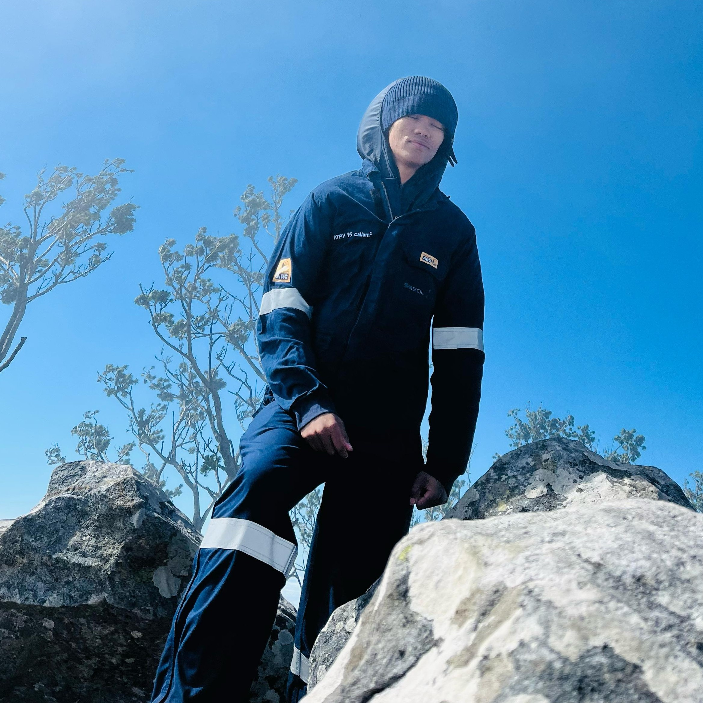

I am Branden Nkhahle, an Electrical Engineering student passionate about electronics, power systems, control, embedded systems, automation and practical engineering.
ELECTRICAL ENGINEERING
About Me
My engineering identity is built around curiosity, practical problem-solving and turning electrical engineering theory into working systems.
Who I am

I am Tlotliso Branden Nkhahle, an Electrical Engineering student at the University of Cape Town. My interests include electrical machines, power electronics, control and instrumentation, embedded systems, electronics and automation.
I enjoy engineering projects where hardware, software and system-level thinking come together to solve a real problem. For me, engineering is a mindset of grit and perseverance — the discipline to keep working through a difficult simulation or a stubborn design problem until the solution comes into focus, and the humility to know I don't have to get there alone.
4IR
My direction
Developing the technical and practical skills needed to contribute to modern automation and the Fourth Industrial Revolution.
Hobbies
Hiking is where I go to reset and think — there's a clarity that comes from a steep trail and a good summit view that I don't find anywhere else.
Chess is my other outlet: I enjoy the discipline of thinking several moves ahead, which mirrors the way I like to approach engineering problems.
Experience
Academic, industrial and vacation-work experiences that have shaped my approach to engineering.
Mar 2024 – Present
Site Manager — Regenerative Neighbourhoods Development Agency
Managing site operations through coordinated planning, ensuring smooth communication and efficient time management. Supporting an after-school mathematics and physics program, prioritising tutor well-being and learner productivity.
OperationsLeadershipEducation
Dec 2025 – Jan 2026
Vacation Student — Sasol Ltd. (Liquid Value Chain)
Analysed and developed monitoring solutions for sequence control strategies on the KX-101 system, working under supervisors Fergie Maluleka and Friedrich Mulke.
Investigated 219 recorded valve trips between April 2014 and March 2015 that resulted in gas flaring on column 70VL-101, totalling over R9.4 million in losses. Traced these to hidden and poorly documented information in the existing start-up sequence, then redesigned the compressor start-up sequence using Honeywell Control Builder and produced a formal control narrative to close the documentation gap and minimise activation delays.
Honeywell Control BuilderSequence controlControl narrativesRefrigeration systems
Dec 2024 – Jan 2025
Vacation Student — Sasol Ltd. (Gas Circuit)
Studied lube-oil systems for the Gas Circuit compressors under coaches Karabo and James: compressor PFDs, instrumentation loop diagrams, control and operating philosophy, and transfer systems under normal and abnormal conditions such as power outages.
Investigated the sequence of events behind a compressor trip that cost an estimated R5.83 million in lost production, and engineered protection schemes for the driving motors — analysing fuse let-through current, CT/VT and relay protection, and cable short-circuit ratings — to confirm the adequacy of existing protection. Recommended an alarm system to flag when the standby pump is left off auto for more than 10 minutes.
Motor protectionFault analysisInstrumentationIndustrial systems
Feb 2023 – Dec 2024
Mathematics Tutor — Regenerative Neighbourhoods Development Agency
Tutored high-school mathematics as part of an after-school academic support program.
TutoringCommunication
Projects
A selection of engineering work demonstrating electronics, embedded systems, control, RF and software skills.
Tracking Camera Tripod (CamX) — in progress
An Android + ESP32 system that turns a tripod into a motorised camera operator. An Android app (CameraX, Kotlin) tracks a chosen subject in real time using Google ML Kit object detection, with a MediaPipe hand-landmarker gesture ("open palm") to lock onto them in a crowd.
A 1D Kalman filter smooths the detected coordinates and predicts the subject's position 100ms ahead to compensate for network latency. The predicted X/Y pixel coordinates are streamed over UDP (with mDNS auto-discovery on the local network) to an ESP32 microcontroller, which drives two servo motors for proportional pan/tilt control of the tripod head.
Android / KotlinCameraXML KitMediaPipeKalman filterESP32UDP networkingServo control
Power subsystem for a MicroMouse maze-solving robot (UCT EEE3088F Design Project): dual-input battery charging (USB-C and 9V DC), 3.3V/5V regulation, motor control for 4 DC motors, I²C battery monitoring and a compact custom PCB.
Also led a separate design study (EEE3097S) diagnosing why the robot's wheel-encoder signals dropped out after small impacts or low battery voltage, causing mapping and navigation errors. Designed a Stateflow-based control system in Simulink with three states — Normal, Signal Loss and Recovery — combining a low-pass filter and signal-quality check to detect bad encoder data and safely halt the motors within one control cycle, then resume motion within a second of signal recovery. Validated the approach across five deliberately-disrupted test runs.
Sensory Subsystem lead for MEERKAT, a semi-autonomous underwater AUV built to detect and avoid ice in Antarctic waters. I developed the STM32F411 firmware integrating a VL53L1X time-of-flight sensor for buoyancy-system limit sensing and a DYP-L08 ultrasonic sensor for long-range acoustic obstacle and ice detection, including signal filtering, calibration and UART frame parsing.
Detail-oriented Electrical and Control Engineer with a BSc Eng from the University of Cape Town. Experienced in managing site operations and enhancing educational outcomes through after-school programs, with a focus on developing protection schemes for industrial motors and optimising refrigeration systems.
Education
University of Cape Town BSc Eng Electrical Engineering Jan 2023 – Jan 2027
Achievements
Awarded a scholarship from the Dell Young Leaders program in recognition of ambition, resilience and leadership potential.
Experience
Site Manager — Regenerative Neighbourhoods Development Agency (Mar 2024 – Present)
Vacation Student — Sasol Ltd. (Dec 2025 – Jan 2026)
Vacation Student — Sasol Ltd. (Dec 2024 – Jan 2025)
Mathematics Tutor — Regenerative Neighbourhoods Development Agency (Feb 2023 – Dec 2024)
Evidence of my engineering ability through technical work and project outputs.
Industrial Presentation — 2025
Lube Oil Systems — Gas Circuit (Sasol)
Technical presentation covering compressor lube-oil systems, slow transfer, reacceleration schemes, motor protection calculations and the compressor-trip sequence of events.
Monitoring Solutions for Sequence Control Strategies (Sasol)
Analysis of 219 valve trips on the KX-101 system and over R9.4 million in flaring losses, leading to a redesigned start-up sequence and a formal control narrative.
Full AUV repository including the Sensory Subsystem firmware (STM32F411, VL53L1X, DYP-L08 ultrasonic sensor) I developed, alongside the housing, power and control subsystems.